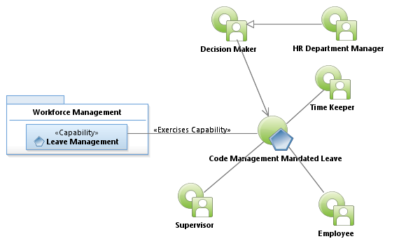
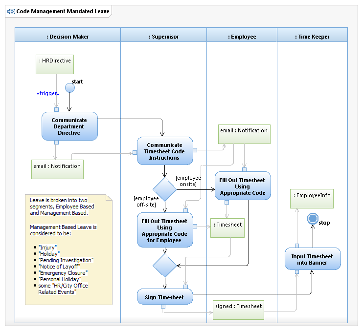

Use Case Model: Code Management Mandated Leave
Architect: Aaron Brown, IT Enterprise Architect Senior
Date Last Modified: 03/08/2013
User Review: Shannon Flett/Linda Escamilla, HR Record Management
Date: 03/08/2013
HR Department Manager may authorize granting of paid leave to the employee, without requiring the use of personal leave for authorized purposes as defined by current city policies and procedures. Management Mandated Leave is considered to be: "Injury", "Holiday","Pending Investigation", "Notice of Layoff", "Emergency Closure", "Personal Holiday", and some "HR/City Office Related Events". In general it is when City management dictates a situation or instance in which the employee will use timesheet codes that have been preconfigured within Banner prior to employee notification.

Use Case Model: Code Management Mandated Leave

Activity Model: Code Management Mandated Leave